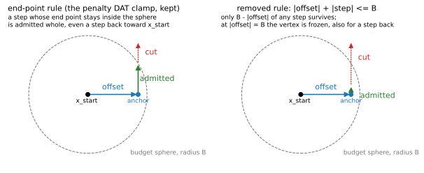
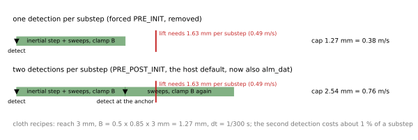
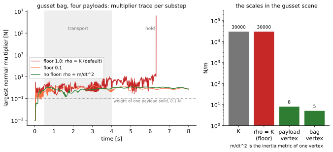
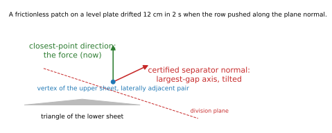
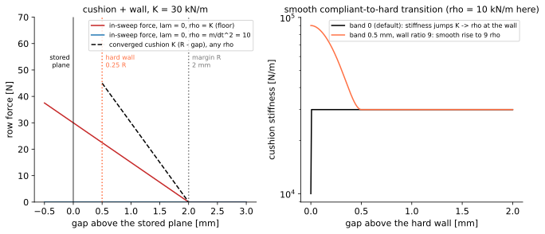
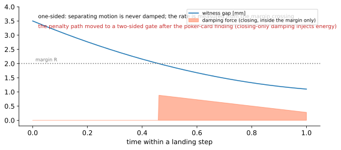
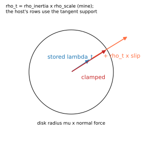
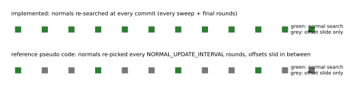
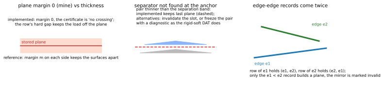

An inventory of the mechanisms, rules and constants in the alm_dat path of SolverVBD that were my own decisions, not part of the reference pseudo code or the ISF design. One section each: what it is, where it lives, why I added it, what the measurements say, and its status. Code references are to ankac/alm-dat-main (today's main plus the #4222 self-contact storage and the ALM-DAT commits). Written 2026-11-05.
| From the design (reference pseudo code of 2026-10-14, ISF) | Added by me |
|---|---|
| trial and certified anchor; the committed state is the anchor | the budget rule |offset| + |step| <= B (removed) |
| one stored division plane per detected pair, truncation against the planes | one forced detection per substep (removed) |
sliding the planes with the maximin rule (dat_plane_offset) | penalty metric floored at K, user scale on the metric |
| two-stage truncation: every sweep, then final rounds | force along the closest-point direction |
| cushion-plus-wall row through one slack, multiplier updated at the trial | hard wall at 0.25 margin above the plane |
| multipliers matched across steps through the sorted rows | smooth transition with wall ratio 9 (off by default) |
| Coulomb friction as a capped tangential multiplier | one-sided margin-anchored damping, friction metric choice |
| separator search, separation band, plane truncation from the rigid-soft DAT (#4180) | normal refresh every commit, margin 0, kept plane, one edge direction, defaults |
The two removed items caused the two headline failures of the benchmark: the lock-in and the lost grasps. The metric floor caused the third, the non-finite bag runs. The remaining items have not been measured; the review forks exist so that they can be decided by ablation rather than by default.

Left: the kept rule. A step is cut where it leaves the sphere; a step back inside is admitted whole. Right: the removed rule freezes a vertex at the cap.
The budget bounds how far a vertex may be committed from the detection pose inside one substep, B = 0.5 x 0.85 x (margin + gap). The penalty DAT path clamps the length of the displacement from the detection pose: the end point stays in a sphere of radius B. My commit kernel instead required |offset| + |step| <= B at each commit. By the triangle inequality that is only a sufficient condition for the end point; it is strictly tighter and gives nothing back.
_commit_truncated_displacement_kernel, particle_dat_kernels.py, commit 6cbff0aeb (2026-10-04). Removed by decision D1 on 2026-11-05: budget_sphere_fraction is the only rule.
A shortcut: the triangle inequality is one line, the sphere intersection a quadratic. I treated sufficient as good enough and never checked what the rule does off the radial direction.
At the cap, B - |offset| is zero, so the vertex cannot move at all, not even back toward the detection pose. Off the cap every non-radial step is cut short. On the benchmark this was the lock-in: cloth sinking at the budget cap, the 10-layer stack non-finite, 10 of 44 ALM-DAT runs completing. With the end-point rule 44 of 44 complete.
Removed. The end-point clamp is the only behaviour, the same as the penalty DAT path.

The admitted motion per substep against the lift's requirement.
The soft self-contact slot has a schedule: PRE_INIT (detect at the step start) or PRE_POST_INIT (detect again after the inertial step). Each detection resets the motion reference, so the admitted motion per substep is B per detection. The host's default is PRE_POST_INIT. I forced alm_dat to PRE_INIT and raised if anything else was set.
_default_collision_frequency_type and _validate_dat_collision_schedules, solver_vbd.py, commit 9eb4ce203 (2026-10-04). Removed by decision D3 on 2026-11-05: _alm_dat_redetect runs the second detection at the certified anchor.
The first implementation initialized the stored planes and matched the multipliers once per step. A second detection re-assigns the row slots, which needed a re-initialization I had not written, so I forbade it instead of doing it. Nothing in the scheme requires one detection: the anchor is penetration-free and can serve as the new detection pose.
For the cloth recipes B is 1.27 mm per 1/300 s, a cap of 0.38 m/s. The Franka lift peaks at 0.49 m/s and needs 1.63 mm per substep. One detection cannot follow it, two can (2.56 mm): every garment slipped at the lift, VBD with its two detections held. The second detection costs about 1 % of a substep (0.7 ms of 64 ms on the towel), the alternative of a 3 mm detection gap costs 2 % plus 14 to 19 times the self-contact records.
Removed. alm_dat follows the host's schedule; PRE_POST_INIT is the default, PRE_INIT stays available, ITERATIONS is refused. The free-flight test admits 1.0 budget per step with one detection and 1.5 with two.

Left: largest normal multiplier per substep on the gusset bag for three floor settings (my 8 s traces). Right: the scales involved.
Each contact row has a penalty metric rho. The row's multiplier advances by rho times the residual after every sweep, and the row's in-sweep stiffness is K rho / (K + rho). I set rho = max(m/dt² x rho_scale, floor x K) with floor = 1, so rho is never below the contact stiffness K.
contact_alm_rho, particle_dat_kernels.py; option particle_contact_alm_rho_floor_ratio = 1.0; commit 5fb018286 (2026-10-05).
A frictionless cloth patch on a level plate drifted 12 cm in 2 s. That patch had rho = m/dt² = 72 N/m against K = 1000 N/m. With rho that small a sweep transmits mostly the stale multiplier through a tiny Hessian and the coupled iteration pumped a lateral oscillation. Flooring rho at K stopped it. Re-measured on 2026-11-05 with the four-run ablation (page): the floor is the whole drift fix; with it off the patch drifts 12 to 47 cm in 4 s whichever force direction is used, with it on it settles in both. Validated on one case with K/rho = 14 and made the default.
The gusset bag has K = 30,000 N/m, bag vertices of 0.02 to 0.12 g and payload vertices of 0.045 to 0.18 g, so m/dt² is 4 to 12 N/m: the floor makes rho 3,000 to 7,000 times the vertex scale. The multipliers on the loaded rows reach 3 to 5 N during the transport, 10 N when the transport stops and 6 to 17 N during the hold, while a whole payload weighs 0.1 N. At 6.3 s one substep runs away to 3.85 x 10⁶ N and a bag particle goes non-finite (campaign runs: 4.2 s and 4.4 s). With the floor at 0.1 K, 0.01 K or off, the same run stays finite to 8 s with multipliers of 0.2 to 1.5 N; the campaign's no-floor run completed 67.5 s holding the bag. The towel survives the same ratio because its self-contact rows carry no load.
Newton's other compliant ALM rows take rho from the inertia support alone: rigid contacts (_contact_auto_normal_rho), joint limits, particle-body attachments. Only bilateral structural and drive rows floor rho at 9 K, and that is where the elasticity ALM floor was refused before. Proposal: remove the floor and the scale, rho = support, as the host's contact rows do. Then re-run the patch drift test and the two bags.
particle_contact_alm_rho_scale multiplies m/dt² before the floor is applied. Default 1.
Same place and commit as the floor (5fb018286).
A tuning knob added together with the floor so the metric could be pushed up without the floor. Nothing in the host has a user scale on an ALM metric: the auto-rho policies compute rho from the support.
Not exercised by the benchmark (always 1).
Remove with the floor.

The row's force originally acted along the stored division-plane normal. Now it acts along the closest-point direction between the two primitives, as the penalty path does; the stored normal only fixes the sign so a crossed pair reports a negative gap instead of a flipped normal.
_vertex_triangle_row_geometry, _edge_edge_row_geometry, particle_dat_kernels.py, commit 5fb018286.
The certified separator picks the largest-gap axis. For laterally adjacent triangles of two sheets that axis is tilted or horizontal, so the cushion pushed the resting patch sideways: 12 cm in 2 s. The closest-point direction is vertical there.
Re-measured on 2026-11-05 with an ablation switch (page): on the current base the stored plane normal and the closest-point direction coincide for every resting row, because the separator search keeps the closest-point axis when it certifies the pair. Both directions settle by 0.6 cm with the floor on and both drift without end with the floor off. The direction change had no measurable effect; the October drift was stopped by the floor. The regression test passes under both.
A deviation from the written design that I did not raise, and one whose stated reason did not survive the ablation. Now the switch particle_contact_alm_force_direction (default closest_point). Anka's direction: stay consistent with the penalty path, which is the closest-point direction.

Left: the row force against the gap. The in-sweep force with lam = 0 depends on rho, the converged force does not. Right: the optional smooth transition of section 7.
The row is a cushion of stiffness K across the margin R and a hard wall. The design put the wall at the stored plane. I moved it to hard_gap = 0.25 x margin above the plane and evaluate the row with gap - hard_gap and R - hard_gap.
particle_contact_alm_hard_gap, default 0.25 x margin, solver_vbd.py; commit 986b7c921 (2026-10-05).
With the wall on the certificate plane, a loaded pair sits exactly on the plane that the truncation must never let it cross, and every truncation then cuts motion at zero room. A wall one thickness above the plane keeps the load off the certificate. The factor 0.25 is my choice.
No ablation. The campaign ran with 0.25 throughout.
Fork D10 "Wall position" in the review, open: wall on the plane, or above it by a fraction of the margin, and which fraction.
With a transition band the cushion stiffness rises along a smoothstep from K to wall_ratio x rho as the gap approaches the wall, so the in-sweep stiffness and the ascent factor reach their hard-regime values before the slack hits its bound. Default band 0, which is the piecewise law.
cushion_stiffness, cushion_force, alm_contact_row_smooth; options particle_contact_alm_transition_band (0) and particle_contact_alm_wall_stiffness_ratio (9); commit 119d9ba90 (2026-11-05).
The transition is Miles's idea (2026-10-14). The ratio 9 is mine: it realizes k_eff = 0.9 K at the wall, mirroring the host's bilateral rows, but no measurement supports the value.
Off in every benchmark run. The unit test checks continuity of force and stiffness.
Fork D9 in the review: keep off, or make the band the default, and which wall ratio.

A dashpot on the closing rate of the witness gap, active only inside the margin and only while closing. The rate is measured from the margin crossing, so the force is zero before contact and continuous at the margin. Separating motion is never damped. Coefficient soft_contact_kd, like the penalty path.
contact_damping_row, particle_dat_kernels.py, commit 119d9ba90.
Landing cloth chattered: a force switching on abruptly at the margin made the local solve overshoot outside the margin, where every contact force vanishes, and fall back the next iteration. Anchoring the rate at the crossing removed the chatter.
No benchmark ablation. The penalty path's own damping was changed after the poker-card stack finding: a closing-only gate injects energy, and the soft flag for the two-sided gate is now on by default in the bidirectional-damping branch. My row repeats the closing-only pattern.
Not raised in the review. Proposal: use the host's two-sided gate, or take damping out of the row until decided.

Coulomb friction is a tangential multiplier: projected into the tangent plane, advanced by rho_t times the slip, clamped to the disk of radius mu times the normal force. The design has the disk; I chose rho_t = m/dt² x rho_scale, the same inertia metric as the normal row before the floor.
alm_friction_row, particle_dat_kernels.py, commit 119d9ba90.
The simplest choice. The host's rigid contact rows use the tangent support, strengthened by the pair structure up to the normal rho (_contact_auto_tangent_rho).
The incline test (patch sticks with friction) passes. No benchmark ablation.
Fork D11 "Friction metric" in the review.

At every truncation the planes are rebuilt at the anchor with a fresh separator search (refresh_normals=True from the solver, always). The reference pseudo code re-picks the normals every NORMAL_UPDATE_INTERVAL rounds and only slides the offsets in between.
_alm_dat_truncate, solver_vbd.py; the refresh_normals argument exists, the solver never passes False.
Simplest to implement; a stale normal can also fail to certify after the anchor moved.
No ablation.
Fork D6 in the review.

Three smaller choices. The planes carry no thickness margin: the certificate is "no crossing", the row's hard gap keeps the load off the plane. When the separator search fails at the anchor (a pair thinner than the separation band), the slot keeps its stored plane, which the anchor never crossed; a slot that never had one stays unconstrained. Edge-edge pairs are recorded twice by the detector, once per edge; only the e1 < e2 record builds a plane, the mirror is marked invalid.
_dat_margin = 0.0 in solver_vbd.py; _build_contact_planes_kernel in particle_dat_kernels.py (the ee_valid handling and the kept-plane branch).
Margin 0 because the row already keeps surfaces apart. Keeping the plane because invalidating it would drop the certificate for a pair that is still separated. One direction because two planes for one pair would double the truncation and could disagree.
No ablations. The rigid-soft DAT on main freezes an uncertifiable pair with a diagnostic instead of keeping a plane.
Forks D7, D8 and "Edge-edge direction" in the review.
particle_dat_plane_update_interval = 1 (truncate and rebuild after every sweep), particle_dat_truncation_iterations = 2 (final rounds), _CONTACT_DIRECTION_EPS = 1e-9 (below this closest-point distance the direction falls back to the plane normal), _DAT_INFINITE_ROOM = 1e30 (room reported when nobody approaches a plane).
solver_vbd.py argument list; particle_dat_kernels.py module constants.
The two cadence values come from the reference pseudo code's stage 1 and stage 2 but their numbers are mine; the constants are numerical guards.
No sweeps over the cadence values.
Covered by the forks "Plane update cadence" and "Final rounds" in the review.
notes/alm-dat-design-review/inputs/algorithm-reference.md (reference pseudo code of 2026-10-14) and the ISF draft; design review with decisions D1 to D14: AnkaChan/newton PR #9.ankac/alm-dat-fable-review; their rebased copies on ankac/alm-dat-main.notes/collision-benchmark-alm-dat/report.md), the headline videos (page), the gusset multiplier traces (notes/collision-benchmark-alm-dat/diagnostics/gusset8s_floor*.json), the detection-cost timing on the towel scene.notes/alm-dat-implementation-choices/make_figures.py; page by build_page.py in the same folder.